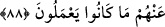
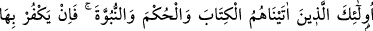
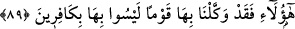
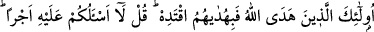

88. İşte bu, Allah’ın hidayetidir, kullarından dilediğini ona iletir. Eğer onlar da
Allah’a ortak koşsalardı yapmakta oldukları amelleri elbette boşa giderdi.
“İşte bu” hidayet, “Allah’ın hidayetidir.” Hidayetin Allah’a izafe edilmesi ona
(hidayete) şeref kazandırmak içindir. “Kullarından dilediğini” hidayete ermeğe ve irşad
olunmaya kabiliyetli olanları “buna iletir.”
“Eğer” bu peygamberler bunca faziletli ve şanı yüce olmalarına rağmen Allah’a
“ortak koşsalardı, yaptıkları” güzel “şeyler hiç olur, giderdi.” Bâtıl olur, boşa
çıkardı. Allah’ın râzı olduğu salih amellerinin hiç bir anlamı olmazdı. Peygamberlerin
durumu böyle olunca onların dışındakilerin hali nice olur, bir düşünün. Hem
kendilerinin, hem de amellerinin nasıl olduğu ortadadır. Bu, gerçekten hem sıradan
insanlar (avam), hem de havassın Allah’ın mekrinden emin olmamaları için son derece
önemli bir uyarı ve ikazdır.
89. İşte onlar, kendilerine kitap, hikmet ve peygamberlik verdiğimiz kimselerdir.
Eğer onlar (kâfirler) bunları inkâr ederse şüphesiz yerlerine bunları inkâr
etmeyecek bir toplum getiririz.
“İşte onlar” geçen âyetlerde anılan on sekiz peygamber “kendilerine Kitab, hüküm
(hikmet ve hükümdarlık) ve peygamberlik verdiğimiz kimselerdir.” Kitab, semâvî
kitaplardan herhangi birisi anlamında cins ismidir. Kitap vermekten maksat, semâvî
kitaplarda olan hakîkatleri onlara tam olarak anlatmak ve o kitapların herkesçe bilinen
hususlarını ve inceliklerini ihâta etmelerini sağlamaktır. Böyle olması, kitabın ilk olarak
indirilmiş olmasından veya önceki peygamberlerden miras kalmasından daha geneldir.
Zaten isimleri zikredilen peygamberlerden her birine ayrı bir kitab verilmemiştir.
Onlara verilen “hüküm”den maksat hikmettir. Ya da gerektiğince Hakk’ı ve doğruyu
ifade edecek güzel konuşma kâbiliyetidir.
“Eğer o kâfirler” yani Mekke halkı, “bu verdiklerimizi” Kitab, hüküm ve nübüvveti
“inkâr ederse,” bilsinler ki “biz, bunları inkâr etmeyecek bir toplumu, bunlara vekil
kılarız.” Onları korumalarını emrederiz, onlara îmana ve onları korumaya muvaffak
kılarız. Onlar hiçbir vakit bunları inkar etmezler, îmanda devamlı olurlar. Bu bahsedilen
îmanlı topluluk ise Rasûllullah (s.a.)’in ashabıdır.